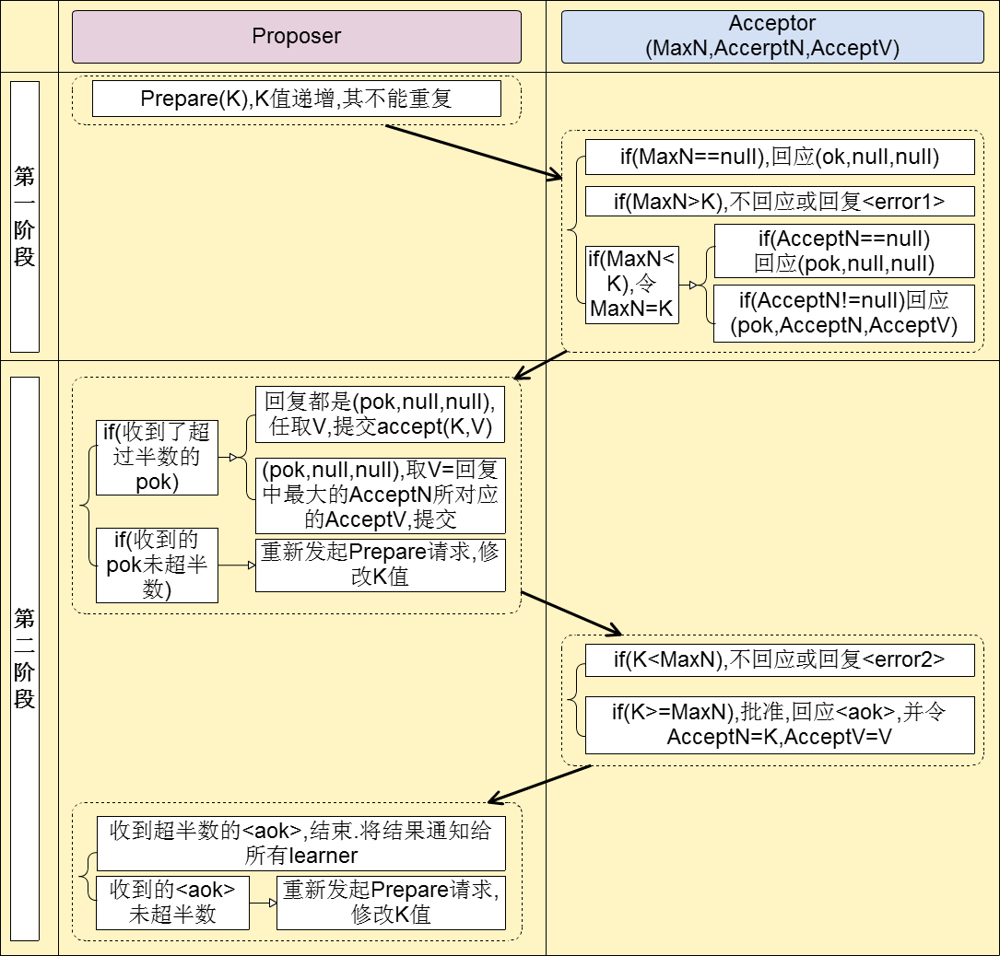
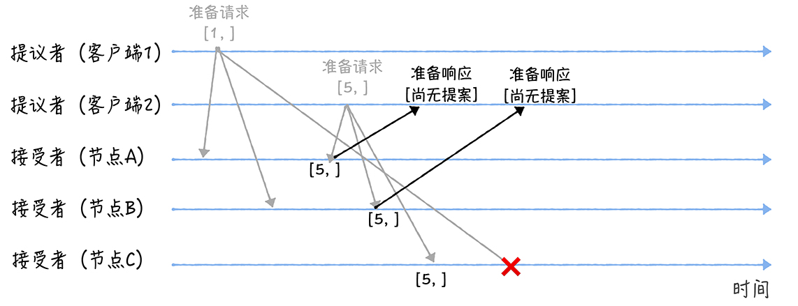
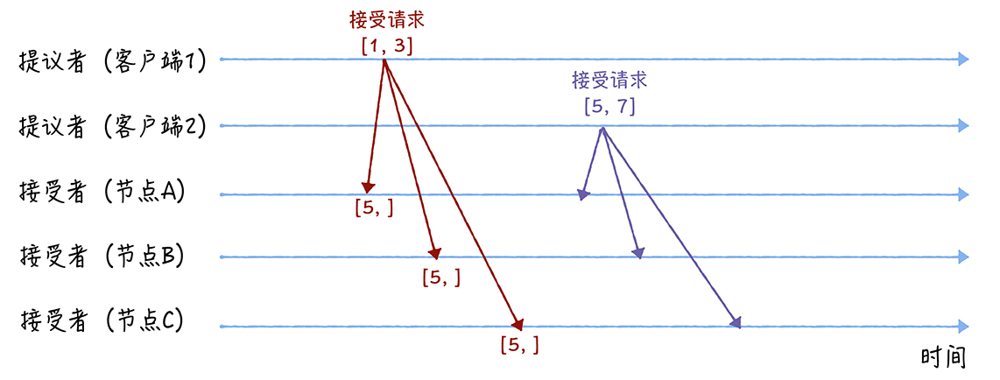

分布式基础（四）——分布式理论之分布式一致性：Paxos算法
Paxos算法是一种基于消息传递的，解决分布式系统共识问题的经典算法， 当前最常用的一批共识算法都是基于它改进的。比如，Fast Paxos 算法、Cheap Paxos 算法、Raft 算法等等。
Paxos算法最初由Leslie Lamport提出，但是他在论文《Paxos Made Simple》中并没有用任何数学语言对Paxos算法进行描述，以致于该论文因为太不规范且晦涩难懂而被TOCS拒收，直到被雪藏了 9 年后，TOCS 编委中才有人从故纸堆中找到了这篇划时代的论文，并予以发表。
Leslie Lamport提出的 Paxos 算法包含 2 个部分 ：
- Basic Paxos 算法，描述的是多节点之间如何就某个值达成共识；
- Multi-Paxos 思想，描述的是执行多个 Basic Paxos 实例，就一系列值达成共识。
Basic Paxos 是 Multi-Paxos 思想的核心，说白了，Multi-Paxos 就是多执行几次 Basic Paxos。
我们先来看下Basic Paxos 算法的过程，然后再来讨论Multi-Paxos 思想。
一、Basic Paxos 算法角色
Basic Paxos算法在Leslie Lamport论文中的内容是比较精简的，核心是三种基本角色：Proposer、Acceptor及Learner：
1.1 Proposer（提议者）
Proposer， 提出提案[n, v]，用于投票表决。一般来说，集群中收到客户端请求的节点，就是提议者。Proposer可以有多个， 代表的是接入和协调功能，收到客户端请求后，发起二阶段提交（Basic Paxos算法本质是一种二阶段提交算法，后面我们就会明白），进行共识协商。
所谓提案（Proposal），可以是任何操作，一个提案包含两个字段：[n, v]，其中 n为提案序号（全局唯一），v为提议值。
1.2 Acceptor（接受者）
Acceptor， 对每个提案进行投票，并存储接受的值。 一般来说，集群中的所有节点都在扮演接受者的角色，参与共识协商，并接受和存储数据。 Acceptor 之间完全对等独立，对于Proposer 提出的提案，必须获得超过半数以上(N/2+1)的 Acceptor批准后才能通过。
1.3 Learner（学习者）
Learner， 被告知投票的结果，接受达成共识的值，存储保存，不参与投票的过程。一般来说，学习者是数据备份节点，比如“Master-Slave”模型中的 Slave，被动地接受数据，容灾备份。
二、Basic Paxos 算法流程
Basic Paxos算法达成共识的过程分为两个阶段：
Phase 1.
(a) A proposer selects a proposal number n and sends a prepare request with number n to a majority of acceptors.
(b) If an acceptor receives a prepare request with number n greater than that of any prepare request to which it has already responded, then it responds to the request with a promise not to accept any more proposals numbered less than n and with the highest-numbered proposal (if any) that it has accepted.
Phase 2.
(a) If the proposer receives a response to its prepare requests (numbered n) from a majority of acceptors, then it sends an accept request to each of those acceptors for a proposal numbered n with a value v, where v is the value of the highest-numbered proposal among the responses, or is any value if the responses reported no proposals.，
(b) If an acceptor receives an accept request for a proposal numbered n, it accepts the proposal unless it has already responded to a prepare request having a number greater than n.
上述两个阶段的交互主要在Proposer和Acceptor之间，整个交互过程如图下：

看不懂？没关系，我来详细分析下这个两个阶段。
2.1 阶段一（准备阶段）
Proposer向所有的Acceptor广播Prepare请求，Prepare请求仅仅是提案序号SN1；
Acceptor接收到Prepare请求SN1后，检查自身上次回复过的Prepare请求SN2
①：如果之前没有进行过任何Prepare请求的响应，则简单回复；
②：如果SN1≤SN2，则忽略此请求，直接结束本次批准过程；
③：如果 SN1≥SN2，检查上次批准的accept请求[SNx，Vx]，并回复[SNx，Vx]，同时该Acceptor承诺不再接受任何编号小于SN1的提案。
2.2 阶段二（批准阶段）
经过一段时间后，Proposer收到一些Acceptor回复，回复可分为以下几种情况：
①：若回复数量多于半数（N/2+1），并所有的回复都是<OK>，则Porposer发起自己的提案accept请求，请求内容为 [SN1, V1]（V1随意取值）；
②：若回复数量多于半数（N/2+1），但有的回复为：[SN2，V2]，[SN3，V3]…… 则Porposer找到所有回复中序号最大的那个，假设为 [SNx，Vx]，然后发起accept请求，请求内容为提案 [SN1，Vx]；
③：若回复数量少于半数，则Proposer尝试将提案序号自增1（SN1+1=SN2），转【阶段一（准备阶段）】继续执行；Acceptor接收到accept请求 [SN1，Vx]后，只要该Acceptor尚未响应过任何编号大于SN1的Prepare请求，它就接受该提案，然后响应
<aok>；Proposer收到超过半数的
<aok>响应后，将提案最终结果通知给Learner；否则，将提案序号自增1，转【阶段一（准备阶段）】继续执行。
三、Basic Paxos 算法示例
上面两节，我已讲完了Basic Paxos 算法的基本角色和核心流程。我知道很多童鞋没看懂，没关系，本节我引入一个示例来讲解下，帮助理解。
假设我们的集群中有A、B、C三个节点，它们需要对客户端写入的某个值X达成共识。
我们假设客户端 1 的提案编号为 1，节点 A、B 先收到来自客户端 1 的Prepare请求；客户端 2 的提案编号为 5，节点 C 先收到来自客户端 2 的Prepare请求。
我这里补充一句：集群中收到客户端请求的节点，才是Proposer，并且集群中的所有节点都在扮演Acceptor。 我这里只是为了方便演示，把客户端 1 和 2 看作是Proposer。
3.1 阶段一（准备阶段）
首先来看第一个阶段，客户端 1、2 作为Proposer，分别向所有Acceptor发送包含提案编号的Prepare请求：
这里要注意的是，在Prepare请求中，只需要携带提案编号就可以了，不需要提案值。
按照上图的时间线顺序，站在节点的角度看，节点 A、B 先收到了提案编号为 1 的Prepare请求，节点 C 先收到了提案编号为 5 的Prepare请求，它们会做如下处理：
- 由于节点 A、B 之前没有通过任何提案，所以将返回一个 “尚无提案”的响应。也就是说节点 A 和 B 在告诉Proposer，我之前没有通过任何提案，并承诺以后不再响应提案编号小于等于 1 的Prepare请求，不会通过编号小于 1 的提案。
- 节点 C 也是如此，它将返回一个 “尚无提案”的响应，并承诺以后不再响应提案编号小于等于 5 的Prepare请求，不会通过编号小于 5 的提案。
然后过了一段时间， 节点 A、B 收到了提案编号为 5 的Prepare请求，节点 C 收到了提案编号为 1 的Prepare请求，将执行下面的处理过程：
- 节点 A、B 收到提案编号为 5 的Prepare请求时，因为提案编号 5 大于它们之前响应的Prepare请求的提案编号 1，而且两个节点都没有通过任何提案，所以它将返回一个 “尚无提案
”的响应，并承诺以后不再响应提案编号小于等于 5 的Prepare请求，不会通过编号小于 5 的提案。 - 当节点 C 收到提案编号为 1 的Prepare请求时，由于提案编号 1 小于它之前响应的Prepare请求的提案编号 5，所以丢弃该Prepare请求，不做响应。

3.2 阶段二（批准阶段）
第二个阶段，客户端 1、2 在收到大多数节点的Prepare响应之后，会分别发送Accept请求：

- 当客户端 1 收到大多数的接受者（节点 A、B）的Prepare响应后，根据响应中提案编号最大的提案的值，设置Accept请求中的值。因为该值在来自节点 A、B 的Prepare响应中都为空（也就是“尚无提案”），所以就把自己的提议值 3 作为提案的值，发送Accept请求[1, 3]。
- 当客户端 2 收到大多数的接受者的Prepare响应后（节点 A、B 和节点 C），根据响应中提案编号最大的提案的值，来设置接受请求中的值。因为该值在来自节点 A、B、C 的准备响应中都为空（“尚无提案”），所以就把自己的提议值 7 作为提案的值，发送Accept请求[5, 7]。
然后，当三个节点收到 2 个客户端的Accept请求时，会进行这样的处理：
- 当节点 A、B、C 收到接受请求[1, 3]的时候，由于提案的提案编号 1 小于三个节点承诺能通过的提案的最小提案编号 5，所以提案[1, 3]将被拒绝。
- 当节点 A、B、C 收到接受请求[5, 7]的时候，由于提案的提案编号 5 不小于三个节点承诺能通过的提案的最小提案编号 5，所以就通过提案[5, 7]，也就是接受了值 7，三个节点就 X 值为 7 达成了共识。
通过上面的示例演示可以看到， Basic Paxos 是通过二阶段提交的方式来达成共识的。 除了共识，Basic Paxos 还实现了容错，在少于一半的节点出现故障时，集群也能工作。
本质上，提案编号的大小代表着优先级，你可以这么理解，根据提案编号的大小，接受者保证三个承诺：
- 如果Prepare请求的提案编号，小于等于接受者已经响应的Prepare请求的提案编号，那么接受者将承诺不响应这个Prepare请求；
- 如果Accept请求中的提案的提案编号，小于接受者已经响应的Prepare请求的提案编号，那么接受者将承诺不通过这个提案；
- 如果接受者之前有通过提案，那么接受者将承诺，会在Prepare请求的响应中，包含已经通过的最大编号的提案信息。
四、Multi-Paxos 思想
Basic Paxos 只能就单个值（Value）达成共识，一旦遇到为一系列的值达成共识的时候，它就不管用了。Leslie Lamport提到的 Multi-Paxos 是一种思想，基于该思想，可以通过多个 Basic Paxos 实例实现一系列值的共识算法（比如 Chubby 的 Multi-Paxos 实现、Raft 算法等）。
4.1 Basic Paxos的问题
我们先来看看Basic Paxos算法存在哪些问题，为何Leslie Lamport要对它进行优化？
首先，如果多个Proposer同时提交提案，可能出现提案冲突，导致在Prepare阶段没有Proposer接收到大多数Prepare响应，协商失败，需要重新协商，而不断的重新协商最终导致了“活性问题”。
想象一下，一个 5 节点的集群，如果 3 个节点作为Proposer同时提案，就可能发生因为没有Proposer接收大多数响应（比如 1 个Proposer接收到 1 个Prepare响应，另外 2 个Proposer分别接收到 2 个Prepare响应）而准备失败，需要重新协商。
此外，Basic Paxos 是通过二阶段提交来达成共识的，2 轮 RPC 通讯本身就十分消耗性能，存在可能的延时问题。如果因为活性问题再多次往返通讯，对整个系统性能的影响可想而知。
4.2 领导者选举
针对活性问题，一种解决方案就是引入领导者节点，领导者节点作为唯一Proposer，这样就不存在多个Proposer同时提交提案的情况，也就不存在因提案冲突而引发的活性问题了。
Leslie Lamport没有说如何选举领导者，需要我们在实现 Multi-Paxos 算法的时候自己实现。 比如在 Chubby 中，Leader节点是通过执行 Basic Paxos 算法进行投票选举产生的。
4.3 二阶段优化
针对二阶段提交的性能问题，我们可以采用“当领导者处于稳定状态时，省掉Prepare阶段，直接进入Accept阶段”这个优化机制。
我们来思考下阶段一（准备阶段）的意义：是发现Acceptor节点上已经通过的提案的值。如果在所有Acceptor节点上，都没有已经通过的提案了，这时领导者就可以自己指定提案的值了，那么，准备阶段就没有意义了，也就是可以省掉了。
也就是说，领导者节点上，序列中的命令是最新的，不再需要通过Prepare请求来发现之前被大多数节点通过的提案，领导者可以独立指定提案中的值。这时，领导者在提交命令时，可以省掉Prepare阶段，直接进入到Accept阶段：

通过上图，可以看到，Multi-Paxos 引入领导者节点之后，因为只有领导者节点一个Proposer，只有它说了算，所以就不存在提案冲突。另外，当领导者节点处于稳定状态时，就省掉了Prepare阶段，直接进入Accept阶段，所以在很大程度上减少了网络通信的往返开销，提升了性能，降低了延迟。
4.4 Chuppy的实现
在实际的系统中，我们该如何实现 Multi-Paxos 呢？接下来，我以 Chubby 的 Multi-Paxos 实现为例，讲解一下。
在 Chubby 中，主节点（领导者节点）是通过执行 Basic Paxos 算法，进行投票选举产生的，并且在运行过程中，主节点会通过不断续租的方式来延长租期（Lease）。比如在实际场景中，几天内都是同一个节点作为主节点。如果主节点故障了，那么其他的节点又会投票选举出新的主节点，也就是说主节点是一直存在的，而且是唯一的。
Chubby 实现了Leslie Lamport提到的 “当领导者处于稳定状态时，省掉了准备阶段，直接进入接受阶段” 这个优化机制，提升了数据的提交效率，但是所有写请求都在主节点处理，限制了集群处理写请求的并发能力，约等于单机。
Chubby 为了实现了强一致性，读操作也只能在主节点上执行。 也就是说，只要数据写入成功，之后所有的客户端读到的数据都是一致的。具体的过程如下：
1.所有的读请求和写请求都由主节点来处理。当主节点从客户端接收到写请求后，作为Proposer，执行 Basic Paxos 实例，将数据发送给所有的节点，并且在大多数节点接受了这个写请求之后，再响应给客户端成功；

2.当主节点接收到读请求后，主节点只需要查询本地数据，然后返回给客户端就可以了：
五、总结
通过本章的讲解 ，我们应该理解了Paxos算法的核心内容：Basic Paxos算法和Multi-Paxos 思想。
Basic Paxos 是经过证明的，而 Multi-Paxos 是一种思想，缺失实现算法的必须编程细节，这就导致Multi-Paxos 的最终算法实现，是建立在一个未经证明的基础之上的，正确性是个问号。
所以在实际使用时，不推荐设计和实现新的 Multi-Paxos 算法，而是建议优先考虑 Raft 算法，因为 Raft 的正确性是经过证明的。当 Raft 算法不能满足需求时，你再考虑实现和优化 Multi-Paxos 算法。